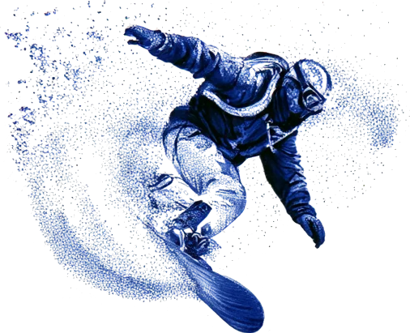

Munich and the Alps
Munich · born 1971
From the Police Force to Adventure

After completing my training as a mid-level police officer, I began my career with the Federal Police helicopter squad. Back then, my goal was to become a helicopter pilot, but life had other plans. Alongside my job, I was an extreme snowboarder and wrote for snowboarding magazines. This phase taught me the importance of trying new things and exploring uncharted paths.
In 1997, I decided to leave the police force behind and dive into the digital world – one of the best decisions of my life.
Munich to New York
New York
My Entry into the Digital World
My journey into the digital realm began in Munich, where I worked on web projects for clients like MTV. Later, I moved to New York, focusing on interactive design and integrated marketing. As a manager at Havas, one of the largest advertising agencies in the U.S., I was responsible for digital campaigns for clients like Volvo, New Balance, and VitaminShoppe. It was an intense period where I learned a lot – especially about leadership and creativity.
With my own company in New York, I had the freedom to implement my ideas and began seeing the world from a truly global perspective.
Tenerife, then Moscow
 Tenerife
Tenerife
Tenerife, Moscow, and My Love for Events
After a stint in Tenerife, I found myself in Moscow. There, as the managing director of the agency Kollektiv, I worked on websites, TV commercials, and new media projects for clients. At the same time, I discovered my passion for exclusive events. From Formula 1 parties to the FIFA World Cup in 2018, I was fortunate to create unique experiences for international guests. This work showed me the power of bringing people together and creating unforgettable moments.
Moscow
Everywhere
 Everywhere
Everywhere
Music, My Constant
Music has always been a cornerstone of my life. During my school days, I DJed at parties and made mixtapes. Today, I perform international sets that range from melodic techno and Afro to indie dance. For me, music is a way to tell stories – and I love it when these stories resonate with people.
To the mixes
Moscow to Munich
 Munich · today
Munich · today
Back in Munich: Back to the roots.
After more than 25 years of globetrotting, I’ve returned to Munich. Here, I find balance between the vibrancy of the city and the tranquility of the mountains around Schliersee and Spitzingsee. Whether hiking, skiing, or working as a Mountain Ranger, I enjoy the variety my life now offers.
From here
And now?
I believe in never standing still. Whether in the digital world, the event industry, or music – I’m always seeking new ways to connect my passions and experiences. For me, it’s about embracing life with all its challenges and opportunities.